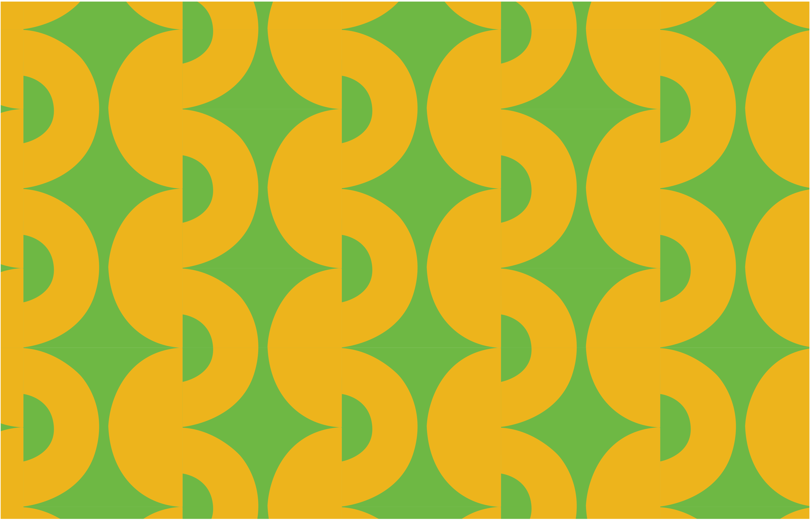
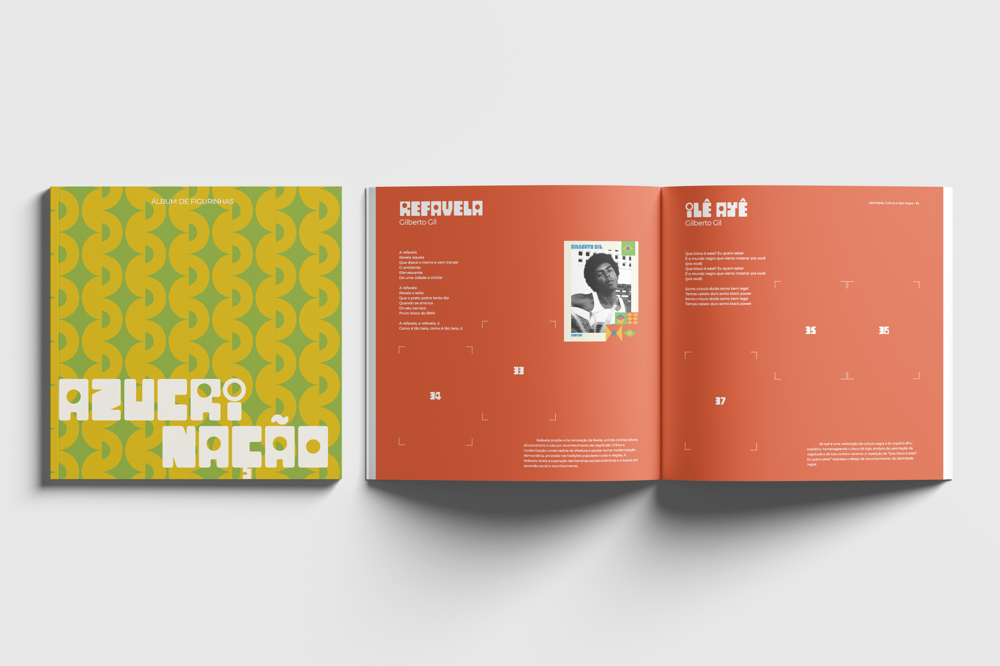
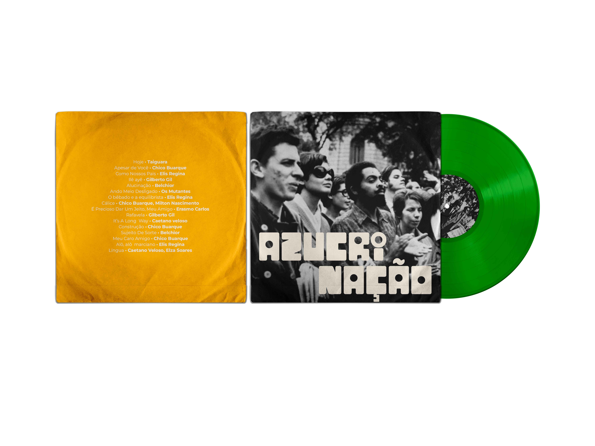
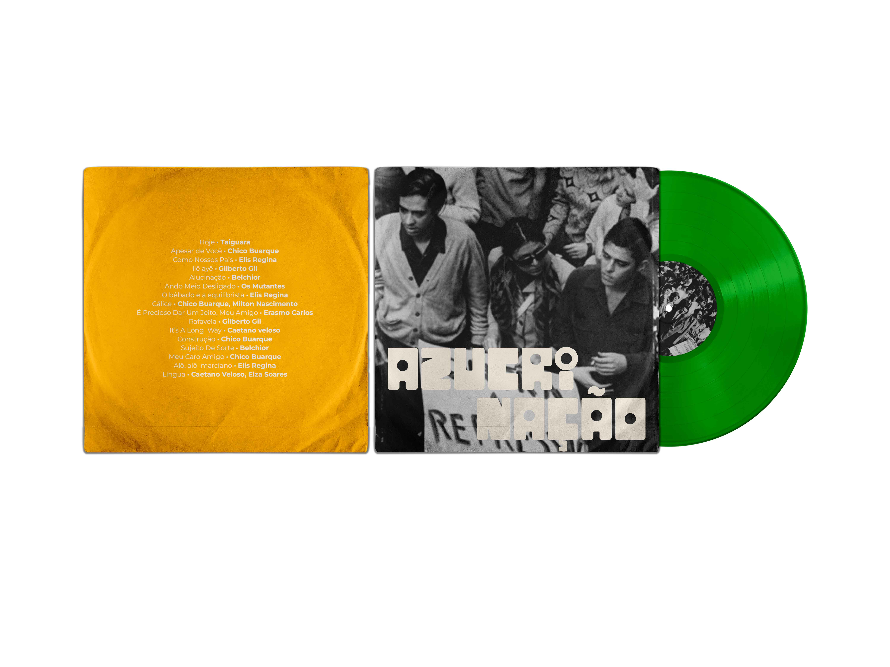

Editorial Design · Branding · Spring 2025
Azucrinação

An archive of resistance
Azucrinação started as a research project and became something more personal. As a Brazilian designer, I grew up hearing MPB without ever fully understanding what those songs were carrying — the metaphors, the irony, the coded defiance of artists pushing back against Brazil's military dictatorship (1970–1985). This project made me listen differently.
The concept was a limited-edition collector's box: two curated vinyls and a World Cup-inspired sticker album weaving lyrics, stories, and emotions into a tactile archive. The format was deliberate. Analog, physical, playful. Because resistance that survived through culture deserves to be held, not just scrolled past.
The hardest part wasn't the research. It was finding a visual language that honored the weight of that history without aestheticizing it. The identity needed to feel unmistakably Brazilian — rooted in the rawness of post-punk and the warmth of MPB — without turning dictatorship into a design trend. Every color choice, every typographic decision had to earn its place.
What this project taught me is that design can be a form of cultural memory — not by documenting the past, but by making people feel close enough to it that it stops feeling like history.
Gallery


